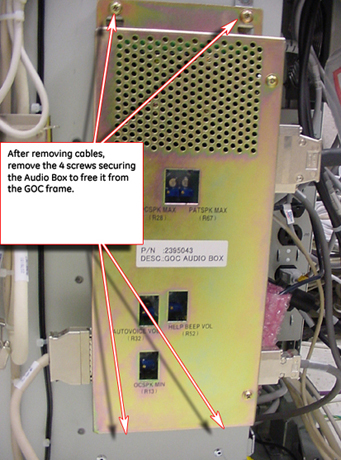

Operating Documentation
Direction 5440001-3, Rev# 6
Signa HDxt Service Methods
Module Version 2.0, Version Date 1/27/09
Operating Documentation |
| Required Persons | Preliminary Reqs | Procedure | Finalization |
|---|---|---|---|
| 1 | Not Applicable | 15 mins | 30 mins |
| Item | Qty | Effectivity | Part# | Manufacturer | |
|---|---|---|---|---|---|
| Phillips Screwdriver | 1 | - | - | - | |
| Item | Qty | Effectivity | Part# | Manufacturer | |
|---|---|---|---|---|---|
| GOC Audio Box | 1 | - | 2395043 | - | |
| ||||
| FATAL ELECTRIC SHOCK HAZARD! | ||||
| TO PREVENT POSSIBLE FATAL ELECTRIC SHOCK, Shutdown the Host computer and perform LOTO BEFORE STARTING THIS PROCEDURE. |
Shut down the system software, and Lockout/Tagout power to the GOC.
Remove the two screws from the bottom of the right side panel.
Illustration 1: Screws to Remove

Remove the right side panel by sliding it upward, and disconnect ground cable.
Disconnect the power cord from the GOC Audio Assembly (AA).
Verify proper cable labeling before proceeding, and remove all cables connected to the GOCAA.
| NOTE: | Make sure to note the cable locations for reattachment. |
Once the cables are removed, refer to Illustration 2, and remove the screws securing the audio box from the GOC frame.
Illustration 2: Remove Screws from Audio Box

Install replacement GOCAA by reversing the preceding steps.
Perform Intercom Adjustment for the newly installed GOC Audio Box.